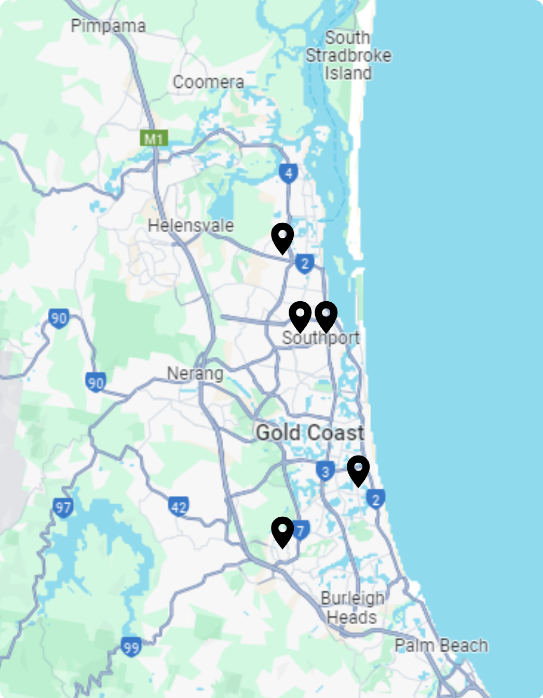

<ion-header >
  <ion-toolbar>
    <ion-buttons slot="start">
      <ion-back-button defaultHref="/home"></ion-back-button>
    </ion-buttons>
    <ion-title class="ion-text-center" id="header-title">map</ion-title>
  </ion-toolbar>
</ion-header>

<ion-content>
  <ion-searchbar show-cancel-button="focus" [debounce]="750" type="text" placeholder="Search movies..."></ion-searchbar>
  
</ion-content>

<ion-footer>
  <ion-toolbar>
    <div id="icons">
      <div class="icon-container">
        <ion-icon routerLink="/home" id="icon" name="home-outline"></ion-icon>
        <span>Home</span>
      </div>
      <div class="icon-container">
        <ion-icon routerLink="/data" id="icon" name="stats-chart-outline"></ion-icon>
        <span>Compare</span>
      </div>
      <div class="icon-container">
        <ion-icon routerLink="/map" id="icon" name="navigate-outline"></ion-icon>
        <span>Map</span>
      </div>
      <div class="icon-container">
        <ion-icon routerLink="/favorites" id="icon" name="heart-outline"></ion-icon>
        <span>Watch List</span>
      </div>
      <div class="icon-container">
        <ion-icon routerLink="/settings" id="icon" name="person-outline"></ion-icon>
        <span>Settings</span>
      </div>
    </div>
    
  </ion-toolbar>
</ion-footer>